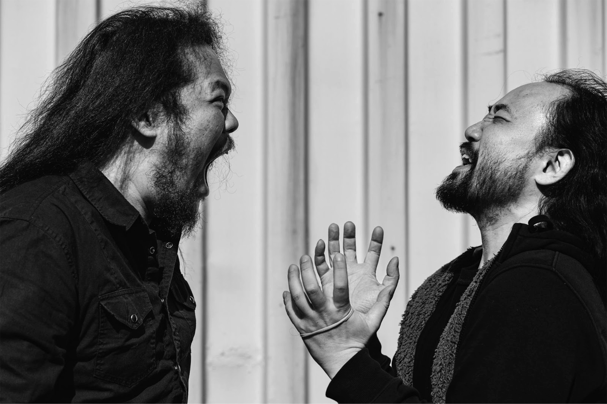
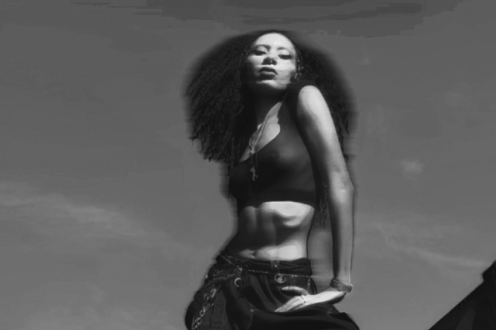
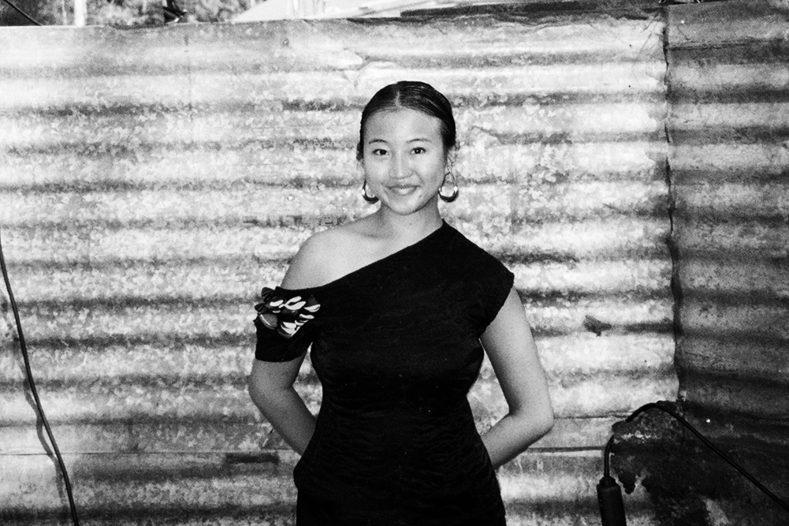
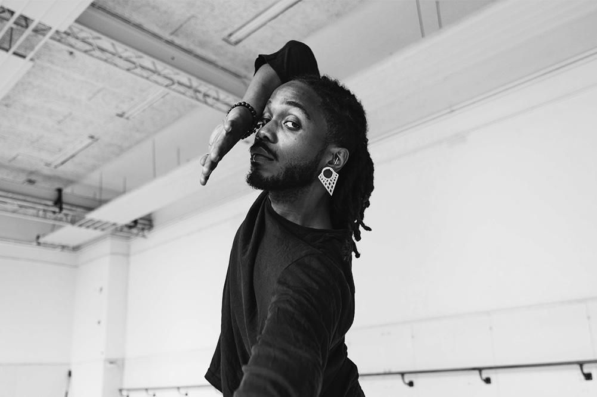

27. 28.
September 2024
28. WORM
"Sorry: Apologies and Accountabiliy"
Nowadays apologizing seems to have become a strategic move that sometimes transforms into a commodity, leaving victims and communities with a hole and no reparations or even acknowledgement of the damage that has been caused by the person, group or company apologizing. Our society is saturated with apologies; but they don’t seem sufficient or sincere. Apologies are grounded in the demands of justice and it requires dismantling of structures of oppression.
And yet we mostly see that in the music industry, a lot of venues, companies and even bands or artists choose to publicly apologize and then refuse to contribute to the person or community they’ve harmed. Cancel Culture has become a buzzword that lost its original meaning and function; festivals, venues, bands, artists and audiences are struggling and frustrated. What does an ethical and meaningful apology look like and how can we reach some common ground?
Moderator:
Süeda Işık
Panelmembers:
Sob (artist),
Linde Schöne (artist),
Lisa McCray (activist/politician),
Marjan Olfers & Anton van Wijk (Verinorm)
28. Arminius
Nuh
Is a captivating live act that’s known for their blend of dark ambient, drone and noise, infusing it with a haunting sense of existential dread.
Drawing inspiration from their own struggles with anxiety and depression Nūh creates an immersive and introspective experience, both unsettling and cathartic, with their music and visuals.
Takkak Takkak
Takkak Takkak (Nyege Nyege Records) is a new duo project by Berlin-based Japanese producer Shigeru Ishihara (aka Dj Scotch Egg, Waqwaq Kingdom, Scotch Rolex) and Vilnius-based Indonesian junk multi-instrumentalist J. Mo'ong Santoso Pribadi (half by Raja Kirik). Each artist is known and loved for their solo, idiosyncratic productions. Together they merge their cheerful and challenging sound worlds through a strong mutual interest in each other's artistic expression.
Rattenburcht
VULVA x Acidic Male
Acidic Male, an interdisciplinary artist, intertwines her personal, diary-like poetry with evocative themes of self-image, transformation, sexuality, revenge, shame, and abjection. With a deep fascination for various genres of electronic music, Acidic Male aims to create a reflective yet confrontational space for listeners through the duality of harsh sounds and confessional texts about the body.
VULVA is a dynamic sludge/doom duo from Rotterdam, featuring Kim Hoorweg on bass/vocals and Nadya van Osnabrugge on drums/vocals. VULVA's primal sounds often evolve into unique forms, ranging from atmospheric, slow-burning tensions to explosive garage punk outbursts. With extensive musical backgrounds, they challenge the established order through gravity, humor, activism, pain, and violence.Together, Acidic Male and VULVA blend their sounds, creating an innovative and powerful collaboration.
This partnership fuses Acidic Male's introspective and confessional electronic landscapes, filled with synths, a drumcomputer and dreamy vocals with VULVA's raw, expressive doom-energy, through loud bass and amplified cello sounds with lots of FXpedals and unnerving screeches. The result is a multifaceted show that confronts, reflects, and transforms, offering a fresh and provocative exploration of sound and emotion.

Goddess Coco: Sexwork in the Netherlands
Goddess Coco is a non-binary, polyamorous queer activist and mother with ADHD. A creative in the broadest sense of the word, Coco writes, sings, speaks, paints and draws. They work as a dominatrix, voice actor, adult content creator and cam girl, among other things. Coco is passionate about intersectional activism and black queer joy. For example, they consider themselves a micro influencer and use their social media to show the world that a black, queer, disabled person can also live a life filled with fun and freedom. Coco also talks about the fun and less fun sides of sex work, kink and polyamory to break the stigmas surrounding this.
Kim: “We’re on the edges of our seats to have Coco talk about this year’s Social Focus; Sexwork. Whenever Coco enters a room, the energy shifts, for the better. Coco is an incredibly inspiring person, and having them talk proudly about their experiences and knowledge about their craft as a sexworker, we couldn’t be more excited, showing us that there’s no such thing as “the sexworker”, they come in so many shapes, forms and beings. We welcome them with open arms”
Tattoos by Eva Kah
Marketplace
Bookstand by KIOSK
Make-up by Tovertrutten
Merch by VULVA
28. WORM
MM666
"We thought we were sad, but we are actually furious." - MM666 is a band consisting of Doortje Hiddema (Euroboy & Sacrificial Chanting Mood) and Milena Eva (GGGOLDDD). Originating from a love of black metal and a chronic and tragic shortage of female perspective. We are feeling all the feels and screaming it from the top of our lungs. In an attempt to free ourselves from patriarchy, we make our own loud and distinctive music from scratch, playing instruments we’ve never played before.
LARASATI
Even before pressing play, LARASATI’s mix titles – from ‘Fever dream experimental chaos’ to ‘Neotropicalism’ and ‘Kawaii Hakken’ – offer a glimpse of their artistic versatility.
The community organizer, designer and DJ aims to transcend boundaries through club music that shifts between euphoric and melancholic. Diverging from club sounds from the Global North and countering 4x4 culture, they strongly advocate for more musical diversity, safer dance floors (especially for queer minorities), and not taking ourselves too seriously.
With Nusaqueer Diaspora, they organize events for the Indonesian and Southeast Archipelagan queer community.
PLASTIC PERSOON
Plastic Persoon is everyone. Everyone is a Plastic Persoon. Kicking against the mains current every minute of every day is exhausting. Plastic Persoon is a coping mechanism. A real life ad. A Balenciaga dragon. The entertainment’s favorite.We all shout to be unique in synchrony, so I renamed myself Plastic Person.An Avant Gabber duo consisting of Sob (45ACIDBABIES, FFOOSS) and Juna (Imhotel, Grandfather). Both antisocially harsh and recognizable for people who want change.
PL3THORA
PL3TH0RA is a DJ, producer and performance artist based inRotterdam of Surinamese and Dutch descent. Breaks, kicks andbass are the core of her sets while exploring breakbeat, raggatekand dubstep, amongst others. Though enjoying the uptempo sidesof these genres, she plays around with a variety of rhythms.
Ong
Ong is a Den Haag based DJ and @parish_queer resident that blends techno/tribal/hardgroove sounds to create fast-paced and pumping rhythms. Born and raised in Indonesia, her distinct upbringing and heritage serves as a background for her love of music; finding comfort in unique percussions and melodies.
DJ Breakage
Lover of music, like most of us. I am a professional dancer that loves to spin some tunes and make people move. 30 years old born and raised in Curaçao based in the Netherlands. Bringing some Afro Caribbean flavor, mixed with fire vogue beats and hip hop vibez.
29 . KIOSK
Zine Workshop
Join us Sunday 29 September 14:00 - 17:00 at KIOSK for a riso zine workshop with Hasret Emine & Philippa *flip* Driest Make a zine about How To Find The Right Angle For The Best Thirst Trap Selfies (kwenie of OnlyFans noemen "ethical" is) or a zine like I Don't Dress For Men: How To Not Dress For The Male Gaze. Or maybe just a cute little zine about Abolish Coffee Table Books: Too Big, Too Expensive, Too Wasteful!
Send an email to kioskrotterdam@gmail.com to sign up.
Limited spots!
Who will be giving the workshop:Philippa *Flip* Driest is an artist, printmaker and runs KIOSK Rotterdam. Her practice often leaks through topics of maintenance, community and distribution.KIOSK is bookshop, (riso) print workshop, and hosts a leaky press.
Hasret Emine is a writer, astrologer, artist & researcher. They run PEMBE, platform for cinema & literature and host The Saturn Show, a monthly astrology radio show on Radio Worm. This fall they'll debut a solo theatre performance on queer astrology.
Access notes: KIOSK is situated on the ground floor in a residential street with a front door (82cm width)The space is divided into two parts and connected by stairs. 4 steps to get onto the platform/presentation place. Each step is 20-25cm high. There are no handrails on the side. Toilet is in the space next door which is accesible by stairs. 4 steps down (each step 20cm-30cm high). The closest wheelchair friendly toilet is within Rotterdam Central Station (800m).There is comfortable seating (with backs) that can be arranged in advance. Free tap water is available. The sound levels may be high as this is a public space. There is a woodworkshop next door, so KIOSK can be dusty at times.